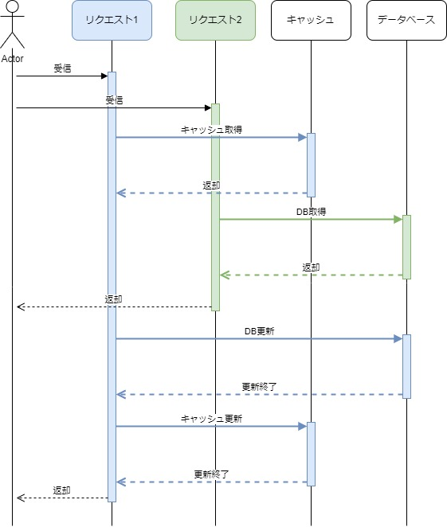
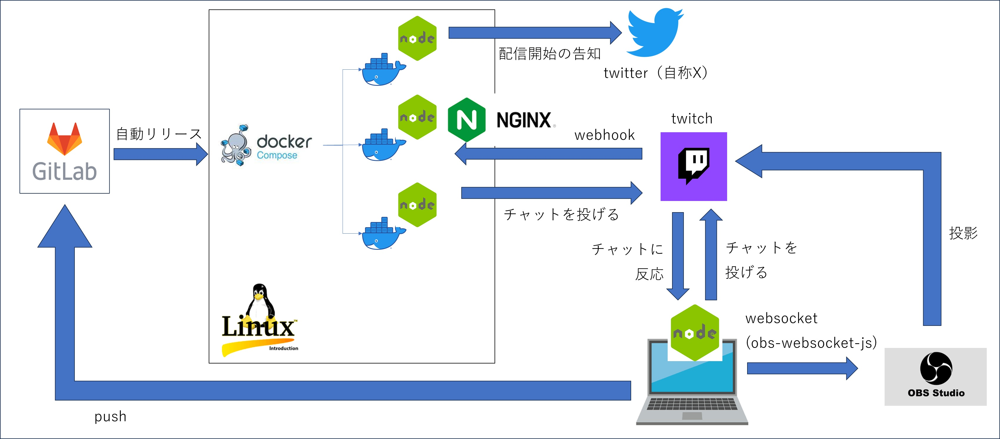

Node.js
歴史（生まれ）
Node.jsは、Chromeに内蔵されている、「V8」というJavaScriptエンジンの上に構築されたJavaScriptの実行環境（ランタイム）です。
Node.jsはHTTPをやり取りするサーバーとしてユーザーからのリクエストをやり取りするなど、ネットワークの処理を得意としています。
さらに、Node.jsは2009年の登場以来、サーバーでの実行にとどまらず、フロントエンドのためのツールとしても広く利用されてきました。
特徴
Node.jsを特徴づける大きなポイントは「非同期のイベント駆動型ランタイム」と「Non-Blocking I/Oとシングルスレッド」です。
Non-Blocking I/Oとシングルスレッドの特徴について説明するためには、まずC10K問題（シーテンケー問題）について理解しておく必要があります。
C10K問題
C10K問題とは、「クライアント1万台問題」の略で、ApacheなどのWebサーバーソフトウェアとクライアントとの通信において、クライアントの同時接続数が約1万台に達すると、Webサーバーのハードウェア性能に余裕があるにもかかわらず、レスポンス性能が大きく下がる問題です。
なぜこのような問題が発生するのかは、以下3つの原因があります。
1. プロセス数の上限
Apacheなどのソフトウェアは、1つのリクエストに対して1つのプロセスを割り当てて処理をする方式が一般的でした。
OS内で走るプロセスにはプロセスIDが割り当てられています。例えば32bit Linuxでは32767が上限です（64bit Linuxでは100万以上まで引き上げられます）。上限を超えるプロセスは生成できないため、1リクエスト1プロセス方式ではプロセス数の上限以上のリクエストを同時に処理できません。ウェブサーバーではApacheの他にも様々なプロセスが走っているため、Apacheに割り当てられるプロセスもその分減ります。
2. コンテキストスイッチのコスト
コンテキストスイッチとは、1つのCPUが複数のプロセスを並行処理する（処理するプロセスを切り替える）ためにそれまでの処理の内容を記録し、新しい処理の内容を復元することです。「コンテキスト（文脈）」「スイッチ（切り替え）」という名前からもお分かりいただけると思います。複数のプロセスが同時に走っているように見せるため、OS内ではこのコンテキストスイッチが頻繁に繰り返されています。
1リクエスト1プロセス方式では、リクエストが増えるとプロセスも増えるため、コンテキストスイッチのコストが無視できなくなります。特にメモリー空間の切り替えには大きなコストがかかります。そしてコンテキストスイッチのコストが大きくなると、肝心なリクエストを捌くCPUリソースが足りなくなります。
マルチプロセスではなくシングルプロセス・マルチスレッドにすればプロセスIDの問題やコンテキストスイッチのコストはかなり改善されますが、それでも次に述べる問題があります。
3. ファイルディスクリプターの上限
例えばデータベースを扱うアプリケーションの場合、リクエストごとにDBサーバーに接続すると、その分だけファイルディスクリプターを消費します。また、MySQLのキャッシュにmemcachedを使う構成にしていると、消費するファイルディスクリプターの数が倍になります。
ファイルディスクリプターとは簡単に説明するとOSが読み書きしているファイルのIDのようなもので、プロセスIDと同様にこれも一度に使える上限がOSごと・プロセスごとに設定されています。
つまり、OSで決められている以上の同時接続はできないため、プロセスIDの他にもこのファイルディスクリプターも同時に捌けるリクエストを制限する要因になります。
C10K問題の解決方法
C10K問題を解決するには、サーバーの台数を増やすという解決方法がありますが、別の方法として考え出されたのが「Non-Blocking I/Oとシングルスレッド」という方式です。Node.jsはこの方式を採用しています。
余談ですが、WebサーバーソフトウェアのNginxもこの方式でC10K問題に対応しており、マルチプロセスのApacheのよりも高速かつ大規模サービスに向いていると言われています。
話しをNode.jsに戻します。
シングルスレッド
Node.js はシングルスレッドのイベントループモデルを採用しており、1つのメインスレッドでイベントループを実行します。これは処理の直列化によって効率的にタスクを処理するためです。
非同期的な処理を実現するために、I/O 操作や非同期処理を別のスレッドで実行することはありますが、これらのスレッドは裏側で動作する補助的なスレッドであり、メインスレッドはブロックされることなく処理を続けます。
これにより、多くの HTTP リクエストを効率的に処理できるようになっています。Apache のようなマルチプロセス/マルチスレッドのモデルとは異なり、Node.js はシングルスレッドであるため、スレッドの切り替えによるオーバーヘッドが発生せず、メモリ消費量を抑えることができます。
シングルスレッドで動かしたら高い、待ちが発生した場合を考慮するとパフォーマンスが得られないように感じますが、Non-Blocking IOという特徴を持つため、シングルスレッドでも性能を最大限発揮できるようになっています。
Non-Blocking IO
Node.jsでは、I/Oが発生した場合にその完了を待たずに、すぐに次の処理を行うことになります。
Blocking IO
リクエスト1のI/Oが終わってからリクエスト2の処理開始
Non-Blocking IO
リクエスト1の完了を待たずにリクエスト2の処理を開始する

コードで体験すると以下のようになります。
以下のコードは、ファイルを読み込んで標準出力するコードですが、実行結果を見ると1→3→2の順に出力されています。
test.js'use strict';
import fs from 'fs';
console.log(1)
fs.readFile('nodejs_test.txt', (err, data) => {
console.log(2)
});
console.log(3)
実行結果1
3
2
fs.readFileはファイルを読み込むためのI/Oを発生させます。ブロッキングI/Oを採用している場合、I/Oが完了するまで次の処理を行わないため、1→2→3の順に出力されますが、
Non-Blocking-I/Oの場合はファイルの読み込みが終わるのを待たずに次の処理が始まります。このため、出力順が1→3→2になっています。これがNon-Blocking-I/Oです。
fs.readFileの第二引数には関数が渡されています（Callback関数）。これはファイル読み込みがいつか終わったら実行される関数です。このため、以下のコードのようにCallback関数でファイルの中身を取得してコンソールに出力しようとしてもうまく出力されません。undefinedになります。
test.js'use strict';
import fs from 'fs';
let input
console.log(1)
fs.readFile('nodejs_test.txt', (err, data) => {
input = data;
});
console.log(input);
実行結果1
undefined
ファイルの中身を取得してその中身を出力するためには、以下のようにCallback関数の中で処理する必要があります。
test.js'use strict';
import fs from 'fs';
let input
console.log(1)
fs.readFile('nodejs_test.txt', (err, data) => {
input = data;
console.log(input.toString());
});
実行結果1
nodejs_testファイルの中
非同期のイベント駆動型ランタイム
JavaScriptはもともとWebページなどでちょっとした動きなどを扱うために利用されてきたプログラミング言語でした。たとえばブラウザでは次のように様々な「イベント」によってタスクが発生します。
- ユーザーが特定のHTML要素をクリックする。
- キーボードで文字入力される。
JavaScriptはブラウザ上で発生するさまざまなイベントを処理することを得意としています。例えば先ほど挙げたイベントに紐づけて次のような処理ができます。
- 特定のHTML要素をクリックしたイベントを受け取ったらアラートを表示する。
- キーボードの入力イベントを受け取る度に、Webページを更新する。
JavaScriptは「いつかこういうイベントが起きたら、この処理を実行する」といった非同期に起きるイベントの処理が言語に深く結びついています。
それではブラウザではなくサーバーで動作するNode.jsではどうなるでしょう。
WebページではブラウザがJavaScriptを動かしています。サーバーサイドではJavaScriptを動かすためにOSとランタイムが同じ役割を果たしています。
OSもブラウザと同様にさまざまなイベント（ファイルの読み込み／書き込みやネットワークのデータ送受信、キーボードやマウスの入力など）が非同期に発生し、それを処理しています。そのような視点で見るとブラウザとOSは似た性質を持っているとも言えます。
ブラウザで発生していたさまざまなイベントを処理するのと同様に、Node.jsはOSで発生するさまざまなイベントを処理するランタイムであるとも言えます。
このようにJavaScriptはもともと言語自体に非同期を中心に処理するという性質が深く結びついています。JavaScript, Node.jsは性能的に優れた非同期処理が書きやすい特徴を持ちます。
Node.jsが生まれた背景に、既存のJavaScriptの文法を使うとOSなどから発生する非同期なイベントを無理なく表現できる、という土壌がありました。ブラウザとサーバーというまったく違ったプラットフォームであるにもかかわらず、非同期と言う文脈は両者で共通していたため、Node.jsはJavaScriptの表現力を活用できました。
Node.jsにはEventEmitterと呼ばれるさまざまなイベントを発行し、受け取る汎用的な仕組みが存在します。Node.jsはこの仕組みを介して、「ファイルの読み込みを開始した」など、OS側のイベントをJavaScriptに持ってきて、Node.js側で受け取ることを可能にしてきました。
このように発行されるイベントを下敷きにさまざまな処理を行う特徴を「イベント駆動型」と表現します。そしてその実行環境であるNode.jsは「非同期のイベント駆動型ランタイム」と呼ばれています。
EventEmitter
Node.jsには、イベント駆動型アーキテクチャを支える根幹となるクラスとしてEventEmitterというクラスがあります。
これを使うことで、「何度も」「細切れ」に起きる非同期なイベントを制御することができます。
作った物
twitchというプラットフォームを使ってゲームの配信をしている。
自作のbotを動かしたりしているのですが、そのシステム構成が以下の図。

参考